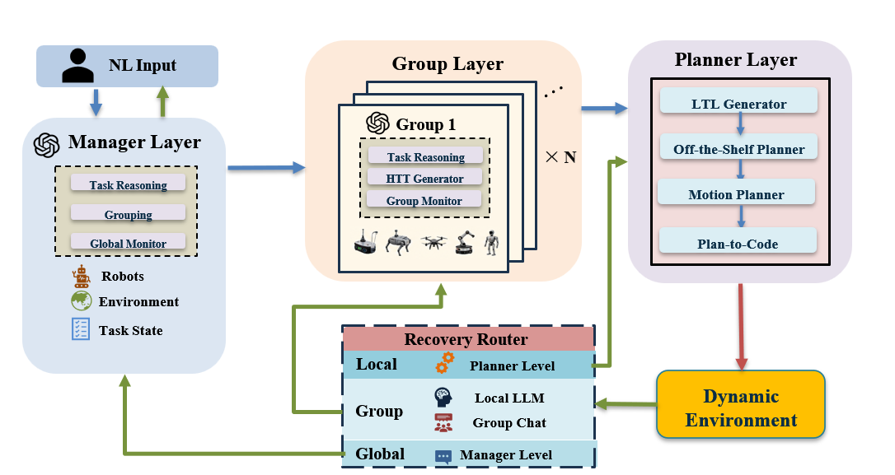
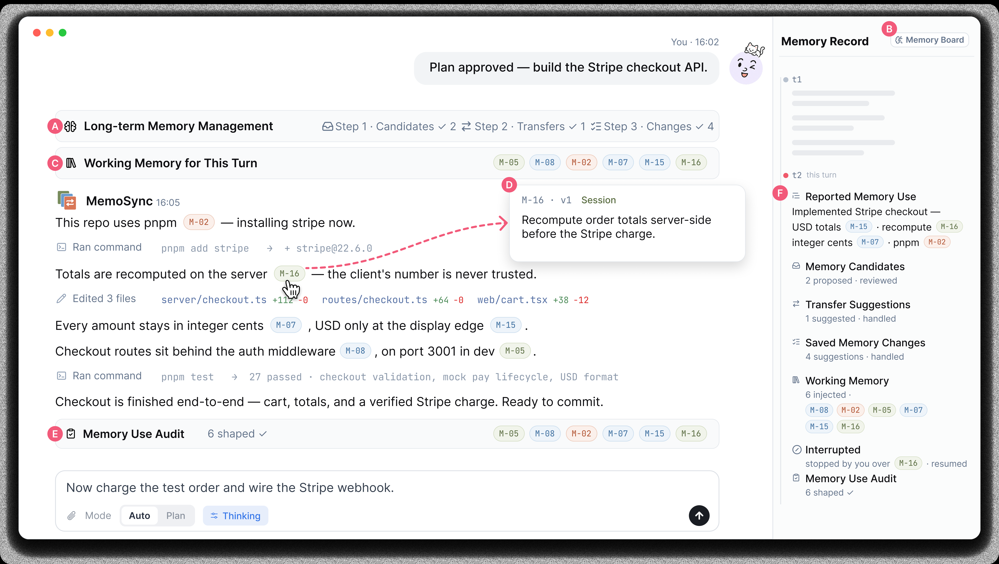

Peking University
B.Eng. Candidate in Robotics Engineering
Peking University / Robotics Engineering
I am a B.Eng. candidate in Robotics Engineering at Peking University, expecting to graduate in June 2027. My research interests span agent systems, human-AI interaction, LLM-based planning and reasoning, and multi-robot planning.
I work on developer-agent memory co-management through MemoSync and open-world robot planning through OpenGRAIL. In summer 2026, I conducted research on human-AI collaboration at HKUST under the supervision of Prof. Xiaojuan Ma. My multi-robot planning research is supervised by Prof. Zhongkui Li.
2023 – Present · Expected graduation: June 2027
B.Eng. Candidate in Robotics Engineering
Baiqiao Zhang, Junze Li, Chunyang Luo, Yuying Tang, Wenshuo Zhang, Shiyuan Piao, Dingdong Liu, Shuai Ma, and Xiaojuan Ma.
Submitted to ACM CHI 2027.
Memory co-management for human-AI collaboration and scalable planning for heterogeneous robot teams.
Sept. 2025 - Present
Lead ResearcherSupervisor: Prof. Zhongkui Li
OpenGRAIL combines LLM-based hierarchical task planning with optimization-based robot allocation. It turns natural-language instructions, environment context, and robot capabilities into dependency-aware task groups and integrates their solutions into globally executable plans for large-scale, long-horizon tasks.

Local embodied observation perspective from the task planning simulation.
Bird's-eye view for inspecting allocation, navigation, and environment behavior.
Jul. 2026 – Sept. 2026 / Summer Research, HKUST
Research AssistantSupervisor: Prof. Xiaojuan Ma
MemoSync turns an AI coding agent's memory into a shared representation that developers can inspect and control. The agent proposes reusable memories, while the developer reviews, edits, and assigns them to Personal, Project, or Session scopes to preserve intent across long-horizon collaboration.

Additional Research / Jul. 2025 – Present
Research AssistantSupervisor: Prof. Zhongkui Li
Project work at Peking University on continuity in AI-assisted development.
Course Project / Peking University
RepoFlow is a course project exploring persistent context and structured agent handoff for long-horizon coding workflows. Its skill-based repository framework helps coding agents preserve project knowledge, coding conventions, and task continuity across sessions and agent transitions.
Complete prompt with memory-free initialization; with Board is shown above and without Board below.
Complete prompt with the B001 project files available, but no conversational memory.
Code-health review performance on three open-source repositories, evaluated with Kimi-2.7-Code.
The health_review workflow was tested on large repositories to compare
execution with and without the RepoFlow skill.

Applied robotics and embodied AI training experience.
Built a robotic-arm visual-navigation demo integrating perception, control, and task execution.
Competition experience in mathematics and modeling.
Open to research collaboration in agent systems, human-AI interaction, and multi-robot planning.